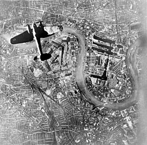

Welcome to Wikipedia
From today's featured article
Corvus is a small constellation in the Southern Celestial Hemisphere. Its name means "raven" in Latin. In the Babylonian star catalogues dating from at least 1100 BCE, it was called the Babylonian Raven. One of the 48 constellations listed by the 2nd-century astronomer Ptolemy, it depicts a raven, a bird associated with stories about the god Apollo, perched on the back of Hydra the water snake. It is also bordered by the constellations Virgo and Crater. Its four brightest stars, Gamma, Delta, Epsilon, and Beta Corvi, form a distinctive quadrilateral in the night sky. With an apparent magnitude of 2.59, Gamma Corvi—also known as Gienah—is the brightest star in the constellation. It is an aging blue giant around four times as massive as the Sun. The young star Eta Corvi has been found to have two debris disks. Three star systems have exoplanets, and a fourth planetary system is unconfirmed. TV Corvi is a dwarf nova—a white dwarf and brown dwarf in very close orbit. (Full article...)
Did you know...
- ... that the bell of the First Presbyterian Church (pictured) in Portland, Oregon, was cast from Civil War cannons?
- ... that former Howard University professor George Gyan-Baffour opposed Ghana's decision to seek a bailout from the International Monetary Fund?
- ... that Cardiff City F.C. is the only non-English team to have won the FA Cup?
- ... that a Buncombe County, North Carolina, deputy sheriff interrupted his convalescence from back surgery to investigate a body discovered 20 years ago today and crushed his sciatic nerve as a result?
- ... that after ABC passed on the television pilot Marvel's Most Wanted in May 2015, it was reworked, only to be passed on again the following May?
- ... that the premiere of the opera Wintermärchen by Philippe Boesmans, based on Shakespeare's The Winter's Tale, featured jazz-rock music by the Belgian group Aka Moon?
- ... that when her husband was shot by police during a Quit India protest march, Tara Rani Srivastava bandaged his wounds with her sari and continued leading the march?
- ... that an animal called the "Seaweed of Death from Hana" has caused poisonings of aquarium hobbyists?
In the news
- Hurricane Irma (satellite image pictured) crosses the Leeward Islands as the strongest-ever recorded hurricane to make landfall in the Caribbean, killing at least ten people.
- Monsoon flooding kills nearly 1,300 people and affects 45 million others in India, Pakistan, Nepal, and Bangladesh.
- North Korea conducts its sixth nuclear test.
- The European X-ray free-electron laser is inaugurated in Hamburg, Germany.
- The Supreme Court of Kenya rules that the country's presidential election was conducted improperly, nullifying its results and ordering a new election within 60 days.
- In boxing, Floyd Mayweather Jr. defeats Conor McGregor.
On this day...
September 7: Independence Day in Brazil (1822)
- 1159 – Pope Alexander III was chosen as the successor of Pope Adrian IV in a disputed election.
- 1778 – Anglo-French War: France invaded the island of Dominica and captured its British fort before the latter even knew that France had allied with the United States.
- 1936 – The last thylacine died in captivity in Hobart Zoo in Australia.
- 1940 – Second World War: The Luftwaffe changed their strategy in the Battle of Britain and began bombing London and other British cities and towns for more than 50 consecutive nights (Heinkel bomber pictured).
- 2010 – A Chinese fishing trawler, operating in disputed waters, collided with Japanese Coast Guard patrol boats near the Senkaku Islands, sparking a major diplomatic dispute between the two countries.
Today's featured picture
A malachite kingfisher (Corythornis cristatus) at Lake Baringo, Kenya. Although many male birds have brighter colours than females, this is not the case with the malachite kingfisher; both sexes are equally colourful. When fishing, these birds often perch less than a metre above the water, diving in once they spot fish, aquatic insects, or crustaceans to prey upon
Photograph: Charles J. Sharp